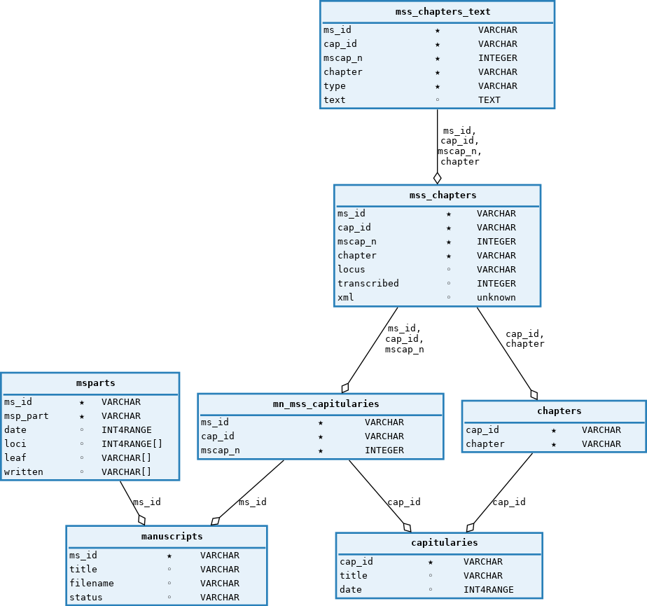
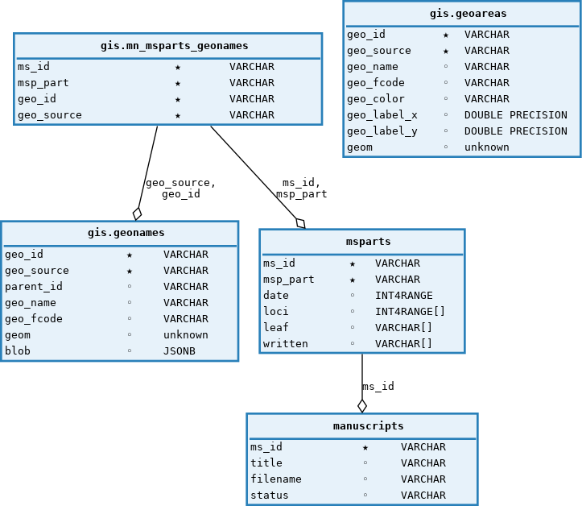

Capitularia
Introduction
Platforms
Overviews
HTML Generation
XSLT Transformations
User Delivery
Overview of the Collation Tool
Pre-Processing of the TEI files
Collation
Custom Version of CollateX
Meta Search
Metadata Extraction
Fulltext Extraction
Search
Collections
Algorithm
RRZK Web Projekt Capitularia
Wordpress Installation
Wordpress Database Structure
Metadata
Wordpress Customizations
Wordpress Theme
Wordpress Plugins
Capitularia VM
Application Server
server
data_server
collatex_server
geo_server
tile_server
Database Structure
Schema
capitularia:
Schema
gis:
db.py
XSLT Transformations
Graph of All Transformations
Graph of Stylesheet Dependencies
Capitularia
Docs
»
Capitularia VM
»
Database Structure
View page source
Database Structure
¶
Schema
capitularia:
¶

Schema
capitularia
¶
Schema
gis:
¶

Schema
gis
¶
db.py
¶